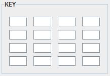
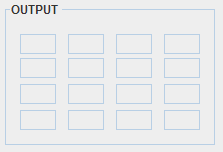

AddRoundKey
From this window we can test the way that AddRoundKey works, combining each byte of the input matrix with the round key by an XOR operation.
The window has three parts:
Input: input matrix, pairs of hexadecimal values should be entered here

Key: the matrix that represents the round key. Pairs of hexadecimal values should be entered here, with which the XOR operation with the input will be done.

Output: in this matrix we will see the result of the operation if all input and key values have been correctly entered.

In order to fill in all fields of the key and input matrix we can proceed manually, paste from the clipboard or generate them randomly by pressing the button "Random".

From the "Edit" menu we can access these and other actions relative to the matrix copy and paste operation.

By pressing the "Run" button, the correctness of all entered fields will be verified.
By pressing the "Back" button we will return to the actions window.
For a more detailed information on the AddRoundKey functioning, please see:
AddRoundKey explanation